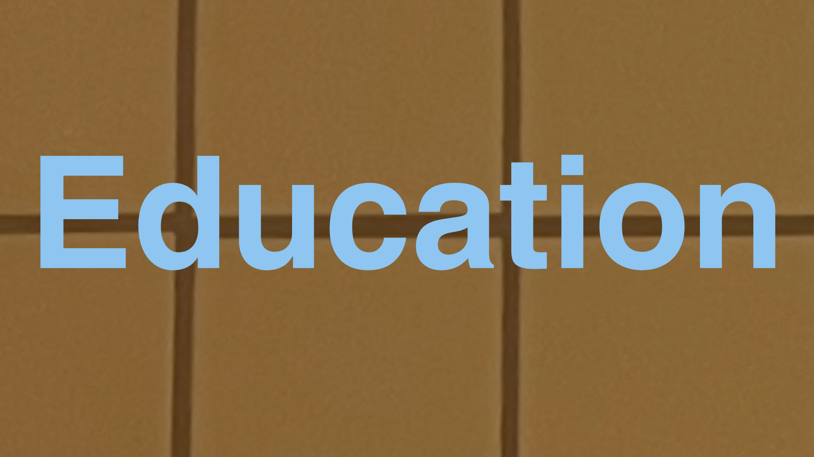

My academic journey has shaped the way I approach communication, culture and business. This page will highlight relevant education, courses and academic projects.
Background

Clara Lamberg
Academic background in marketing, communication and cultural studies.
My academic journey has shaped the way I approach communication, culture and business. This page will highlight relevant education, courses and academic projects.
Background